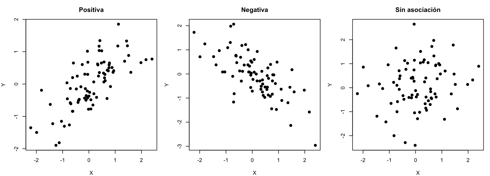
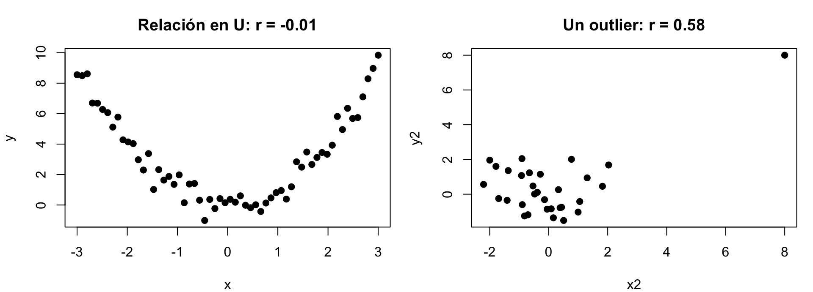

| Escolaridad | Ingreso | Horas trabajo | |
|---|---|---|---|
| Escolaridad | 1.00 | 0.45 | 0.3 |
| Ingreso | 0.45 | 1.00 | -0.2 |
| Horas trabajo | 0.30 | -0.20 | 1.0 |
Sesión 8 - Preparación para la tercera prueba
Grupo de Estudio de Estadística Correlacional
Contenidos del repaso
- Asociación, covarianza y correlación
- Matrices de correlación
- Tablas de contingencia y Chi cuadrado
- Inferencia en asociación
- Ejercicios tipo prueba y checklist final
1. Asociación, covarianza y correlación
¿Qué es asociación?
- Dos variables están asociadas cuando los valores de una cambian junto con los de la otra.
- No implica causalidad.
- Se explora primero gráficamente: el gráfico de dispersión (scatterplot) para dos variables numéricas.
Qué mirar en un gráfico de dispersión:
- Dirección: positiva, negativa o sin patrón
- Forma: lineal, curva, otra
- Fuerza: qué tan cerca están los puntos de un patrón
- Casos atípicos (outliers)
Ejemplo: gráficos de dispersión

Covarianza
\[ \text{cov}(X,Y)=\frac{\sum_{i=1}^{n}(x_i-\bar{x})(y_i-\bar{y})}{n-1} \]
- Signo: positiva (crecen juntas), negativa (una sube, otra baja), cercana a 0 (sin relación lineal).
- Magnitud: depende de las unidades de las variables → no es comparable ni fácil de interpretar.
- Solución: estandarizarla → correlación.
Correlación de Pearson (r)
\[ r=\frac{\text{cov}(X,Y)}{s_X\, s_Y} \]
- Covarianza estandarizada: -1 ≤ r ≤ 1
- Signo = dirección; valor absoluto = fuerza de la relación lineal
- No depende de las unidades
- Requiere dos variables numéricas (intervalo/razón)
Interpretación de la magnitud
Referencia común (Cohen), según \(|r|\):
| \(|r|\) | Magnitud |
|---|---|
| ≈ 0,10 | Pequeña / débil |
| ≈ 0,30 | Mediana / moderada |
| ≥ 0,50 | Grande / fuerte |
Note
Siempre interpretar en contexto: variables, dirección, fuerza y unidades de análisis. Ejemplo: “A mayor escolaridad, mayor ingreso (r = 0,45): asociación positiva, moderada-fuerte.”
Coeficiente de determinación (r²)
\[ r^2 = \text{varianza compartida} \]
- Proporción de la variabilidad de una variable que se comparte con la otra.
- Ejemplo: \(r = 0{,}30 \Rightarrow r^2 = 0{,}09\) → 9 % de varianza compartida (91 % no compartida).
- \(r=0{,}60 \Rightarrow r^2=0{,}36\) → el doble de r no es el doble de varianza compartida.
Limitaciones de Pearson
- Sólo mide relaciones lineales: una relación en U puede dar r ≈ 0 y estar fuertemente asociada.
- Sensible a valores extremos (outliers): pueden inflar, reducir o incluso cambiar el signo de r.
- Restricción de rango: si se observa un rango acotado, r se subestima.
- Correlación ≠ causalidad (posibles variables confusoras o causalidad inversa).
- Siempre graficar antes de calcular.
Ejemplo: relación no lineal y outlier

Correlación con variables no continuas
| Variables | Coeficiente |
|---|---|
| Numérica – numérica (lineal) | Pearson |
| Ordinal – ordinal (o relación monótona, outliers) | Spearman (rho), Tau de Kendall |
| Numérica – dicotómica | Punto biserial (equivale a Pearson con variable 0/1) |
| Numérica – categórica (varias categorías) | Eta (η) / eta cuadrado |
| Categórica – categórica | Phi (2×2), V de Cramer |
2. Matrices de correlación
Lectura de una matriz de correlación
- Diagonal = 1: cada variable con ella misma.
- Es simétrica: se lee sólo un triángulo.
- Cada celda: coeficiente entre la variable de la fila y la de la columna.
- Describir: dirección, fuerza, y (si se informa) significación.
- Ej.: Escolaridad–Ingreso r = 0,45: relación positiva moderada; Ingreso–Horas r = −0,20: negativa débil.
Casos perdidos: listwise vs pairwise
| Listwise (por lista) | Pairwise (por pares) | |
|---|---|---|
| Qué hace | Elimina todo caso con algún dato perdido en cualquier variable de la matriz | Para cada par, usa los casos con datos en ambas variables |
| N | Único y constante en toda la matriz | Varía de celda en celda |
| Ventaja | Misma muestra para todo | Aprovecha más información |
| Desventaja | Puede perder muchos casos | Muestras distintas por coeficiente; difícil comparar |
Warning
El N afecta la precisión y la significación. Al interpretar una matriz, revisar siempre cuál N se usó.
Ejemplo: efecto sobre el N
Base de 100 casos: 10 pierden dato en X, 8 en Y, 5 en Z (sin solaparse).
- Listwise: N = 100 − 10 − 8 − 5 = 77 para todas las correlaciones.
- Pairwise:
- r(X,Y): N = 100 − 10 − 8 = 82
- r(X,Z): N = 100 − 10 − 5 = 85
- r(Y,Z): N = 100 − 8 − 5 = 87
3. Tablas de contingencia y Chi cuadrado
Tabla de contingencia
Cruza dos variables categóricas. Celdas con frecuencias absolutas; márgenes con totales.
| Sí | No | Total | |
|---|---|---|---|
| Hombres | 30 | 20 | 50 |
| Mujeres | 20 | 30 | 50 |
| Total | 50 | 50 | 100 |
Porcentajes: ¿por fila o por columna?
- % por fila: dentro de cada categoría de la variable en filas. Ej.: de los hombres, 60 % dijo Sí; de las mujeres, 40 %.
- % por columna: dentro de cada categoría de la variable en columnas. Ej.: de quienes dijeron Sí, 60 % son hombres.
- % del total: respecto a N.
Tip
Regla práctica: calcular el porcentaje dentro de la variable explicativa (independiente) y comparar entre sus categorías.
Independencia estadística y frecuencias esperadas
- Independencia: la distribución de una variable es la misma en todas las categorías de la otra.
- Frecuencia esperada (si hubiera independencia):
\[ E_{ij}=\frac{(\text{total fila}_i)(\text{total columna}_j)}{N} \]
- Ej.: Hombres–Sí: \(E = \dfrac{50 \cdot 50}{100}=25\)
Estadístico Chi cuadrado
\[ \chi^2=\sum\frac{(O-E)^2}{E} \qquad gl=(f-1)(c-1) \]
Con el ejemplo (todas las \(E=25\)):
\[ \chi^2 = 4\cdot\frac{(30-25)^2}{25}=4 \qquad gl=(2-1)(2-1)=1 \]
- Valor crítico (α = 0,05, gl = 1): 3,84 → 4 > 3,84 → se rechaza H₀ (p ≈ 0,046).
- Supuesto: frecuencias esperadas ≥ 5 en (casi) todas las celdas.
- χ² siempre ≥ 0; crece con N.
Magnitud de la asociación: Phi y V de Cramer
χ² indica si hay evidencia de asociación, no qué tan fuerte es.
\[ \phi=\sqrt{\frac{\chi^2}{N}} \qquad V=\sqrt{\frac{\chi^2}{N\cdot \min(f-1,\,c-1)}} \]
- Phi: tablas 2×2. V de Cramer: tablas de cualquier tamaño (en 2×2, V = φ).
- Rango de 0 (sin asociación) a 1 (asociación perfecta).
- Ejemplo: \(\phi=\sqrt{4/100}=0{,}20\) → asociación débil (aunque χ² sea significativo).
4. Inferencia en asociación
Repaso de la Unidad 1 aplicado a asociación
- Inferencia: generalizar de la muestra a la población.
- Parámetro (ρ, población) vs estimador (r, muestra).
- Error muestral: el r de una muestra no es exactamente ρ.
- Test de hipótesis + nivel de significación (α) + intervalo de confianza.
- Error tipo I (rechazar H₀ siendo verdadera; probabilidad = α) y error tipo II (no rechazarla siendo falsa).
Hipótesis en correlación
\[ H_0:\ \rho = 0 \quad (\text{no hay asociación lineal en la población}) \] \[ H_1:\ \rho \neq 0 \quad (\text{bilateral}) \]
(unilaterales: \(\rho>0\) o \(\rho<0\), si hay hipótesis direccional)
Hipótesis en Chi cuadrado
\[ H_0:\ \text{las variables son independientes (no hay asociación en la población)} \] \[ H_1:\ \text{las variables están asociadas} \]
Siempre redactar en términos del contexto: “H₀: el género y la opinión son independientes en la población.”
Prueba de significación de la correlación
\[ t=\frac{r\sqrt{n-2}}{\sqrt{1-r^2}}\qquad gl=n-2 \]
Ejemplo: \(r=0{,}30,\ n=50\)
\[ t=\frac{0{,}30\sqrt{48}}{\sqrt{1-0{,}09}}\approx 2{,}18 \qquad gl=48 \]
- t crítico (α = 0,05, bilateral) ≈ 2,01 → |t| > 2,01
- p ≈ 0,034 < 0,05 → se rechaza H₀: hay evidencia de correlación en la población.
Cómo decidir
Con valor p
- p < α → rechazar H₀
- p ≥ α → no rechazar H₀
p = probabilidad de obtener un resultado igual o más extremo que el observado si H₀ fuera verdadera.
Con valor crítico
- |estadístico| > valor crítico → rechazar H₀
- χ²: estadístico > crítico → rechazar
Nivel de significación α: se fija antes (comúnmente 0,05).
Important
Nunca se “acepta” H₀: sólo se rechaza o no se rechaza.
Intervalo de confianza para ρ
Se obtiene con la transformación de Fisher:
\[ z=\tanh^{-1}(r),\qquad EE=\frac{1}{\sqrt{n-3}} \]
IC: \(z \pm 1{,}96\cdot EE\) y luego se vuelve a la escala de r.
Ejemplo (\(r=0{,}30\), \(n=50\)): IC 95 % ≈ [0,02 ; 0,53]
- El IC no incluye 0 → coherente con rechazar H₀ (α = 0,05).
- Es muy amplio: estimación imprecisa de ρ.
Significación ≠ magnitud
- Significación estadística: ¿hay evidencia de que la asociación existe en la población?
- Magnitud (tamaño del efecto): ¿qué tan fuerte es? (r, r², φ, V).
- Con N grande, asociaciones muy pequeñas resultan significativas.
- Con N pequeño, asociaciones grandes pueden no serlo.
- Por eso se reporta siempre ambas: significación y tamaño del efecto.
Generalización e interpretación sustantiva
Cómo redactar una conclusión completa:
- Hipótesis (H₀ y H₁) en contexto
- Estadístico y gl (o N), valor p, α
- Decisión sobre H₀
- Magnitud y dirección de la asociación
- Interpretación sustantiva: qué significa para las variables y a qué población se puede generalizar (según el diseño muestral)
“Con α = 0,05 se rechaza H₀ (r = 0,30; p = 0,034): hay evidencia de una asociación positiva y moderada entre X e Y en la población. Comparten un 9 % de varianza. Esto no implica causalidad.”
5. Práctica
Resuelvan la guía entregada, con errores o aciertos en la forma.

GE Correlacional